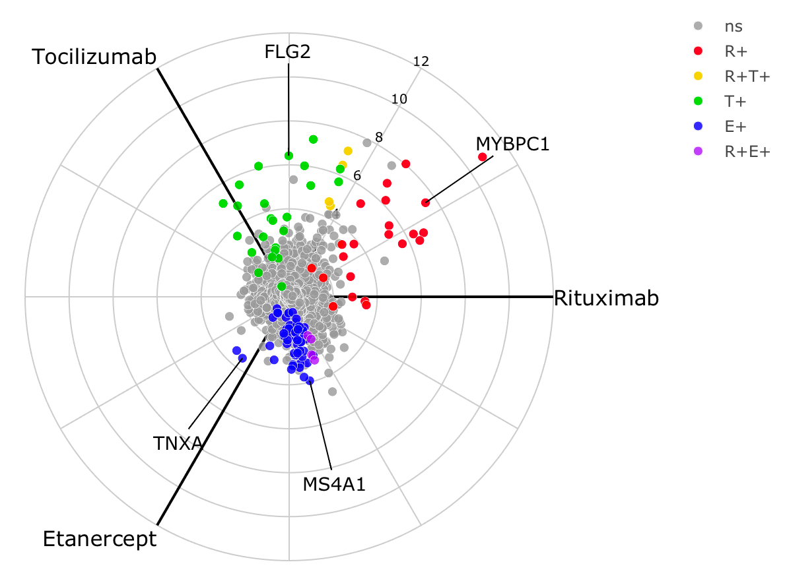
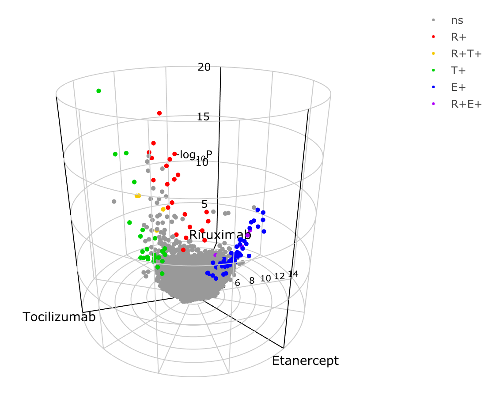
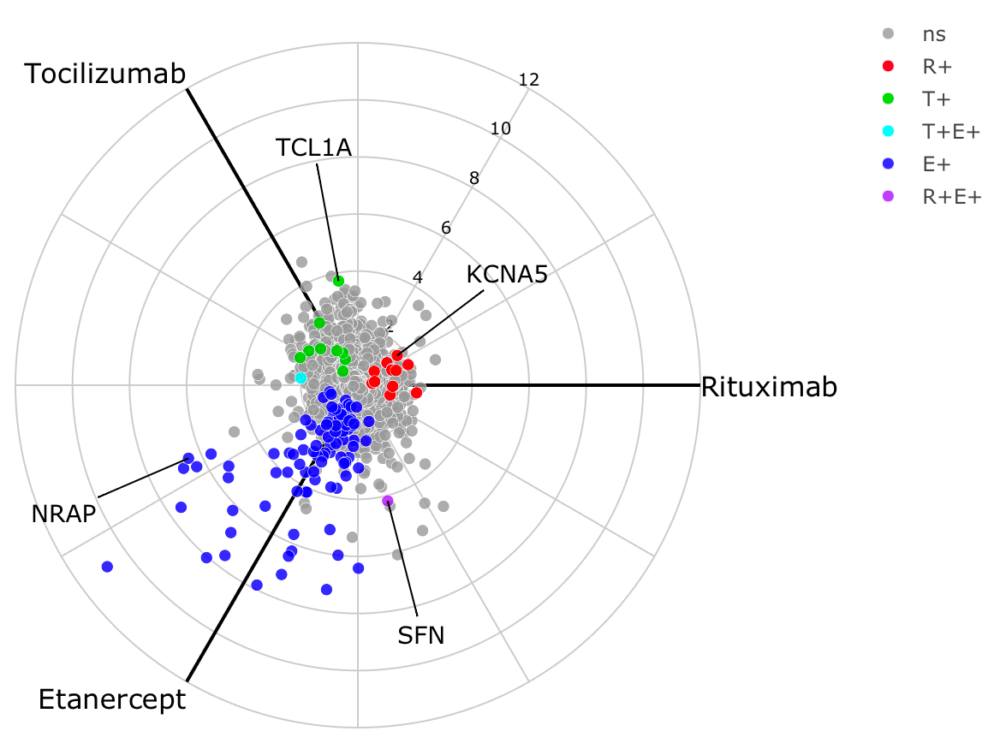
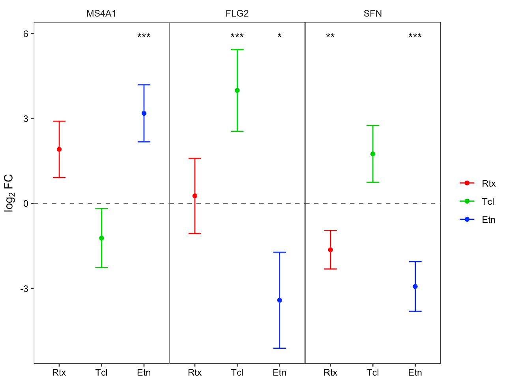

volcano3D: 2x3-way analysis
Myles Lewis, Katriona Goldmann, Elisabetta Sciacca
Source:vignettes/Vignette_2x3.Rmd
Vignette_2x3.Rmd2x3-way analysis

The main work flow for using volcano3D is ideal for comparing high dimensional data such as gene expression or other biological data across 3 classes, and this is covered in the main vignette. However, an alternative use of 3-way radial plots and 3d volcano plots is for 2x3-way analysis. In this type of analysis there is a binary factor such as drug response (responders vs non-responders) and a 2nd factor with 3 classes such as a trial with 3 drugs.
Example
This vignette shows analysis from the STRAP trial in rheumatoid arthritis, in which patients were randomised to one of three drugs (etanercept, rituximab, tocilizumab). Clinical response to treatment (a binary outcome) was measured after 16 weeks. Gene expression data from RNA-Sequencing (RNA-Seq) of synovial biopsies from the patients’ inflamed joints was performed at baseline. RNA-Seq data is count based and overdispersed, and thus is typically best modelled by a negative binomial distribution.
DESeq2 pipeline
Differential gene expression to compare the synovial gene expression between responders vs non-responders is performed using the Bioconductor package DESeq2. Since there are 3 distinct drugs this becomes a 2x3-factor analysis.
The following code shows set up and 2x3-way analysis in DESeq2 followed by generation of a ‘volc3d’ class results object for plotting and visualisation of the results.
library(volcano3D)
# Basic DESeq2 set up
library(DESeq2)
counts <- matrix(rnbinom(n=3000, mu=100, size=1/0.5), ncol=30)
rownames(counts) <- paste0("gene", 1:100)
cond <- rep(factor(rep(1:3, each=5), labels = c('A', 'B', 'C')), 2)
resp <- factor(rep(1:2, each=15), labels = c('non.responder', 'responder'))
metadata <- data.frame(drug = cond, response = resp)
# Full dataset object construction
dds <- DESeqDataSetFromMatrix(counts, metadata, ~response)
# Perform 3x DESeq2 analyses comparing binary response for each drug
res <- deseq_2x3(dds, ~response, "drug")The design formula can contain covariates, however the main contrast should be the last term of the formula as is standard in DESeq2 analysis.
The function deseq_2x3() returns a list of 3 DESeq2
objects containing the response analysis for each of the three drugs.
These response vs non-response differential expression comparisons can
be quickly visualised with the easyVolcano() function from
the R package easylabel, which is designed for DESeq2 and
limma objects and uses an interactive R/shiny interface.
library(easylabel)
df <- as.data.frame(res[[1]]) # results for the first drug
easyVolcano(df)The deseq_2x3 output is passed to
deseq_2x3_polar() to generate a volc3d class
object for plotting. Thus the 3-way radial plot and 3d volcano plot
simplify visualisation of the 2x3-way analysis, replacing 3 volcano
plots with a single radial plot or 3d volcano plot.
# Generate polar object
obj <- deseq_2x3_polar(res)
# 2d plot
radial_plotly(obj)
# 3d plot
volcano3D(obj)Real world example
The example below using real data from the STRAP trial demonstrates a
3-way radial plot highlighting the relationship between genes
significantly increased in responders across each of the three drugs.
The pipe to toWebGL() is used to speed up plotting by using
webGL instead of SVG in plotly scatter plots. Alternatively, a ggplot2
version can be plotted using radial_ggplot().
obj <- deseq_2x3_polar(data1)
labs <- c('MS4A1', 'TNXA', 'FLG2', 'MYBPC1')
radial_plotly(obj, type=2, label_rows = labs) %>% toWebGL()
A 3d volcano plot can be generated too.

To show genes which are significantly increased in non-responders for
each drug, we reprocess the object using the argument
process = "negative" as this leads to a different colour
scheme for each gene. The polar coordinates are essentially flipped as
each axis represents increased expression in non-responders.
obj <- deseq_2x3_polar(data1, process = "negative")
labs <- c('MS4A1', 'TNXA', 'FLG2', 'MYBPC1')
radial_plotly(obj, type=2, label_rows = labs) %>% toWebGL()
Custom 2x3-way analysis
The above workflow is designed for RNA-Seq count data. For other raw
data types, the function polar_coords_2x3() is used to map
attributes to polar coordinates in a 2x3-way analysis.
polar_obj <- polar_coords_2x3(vstdata, metadata, "ACR.response.status",
"Randomised.Medication")
radial_plotly(polar_obj, type=2)
volcano3D(polar_obj)In the above code example vstdata contains transformed
(approximately Gaussian) gene expression data with genes in columns and
samples in rows. metadata is a dataframe of sample
information with samples in rows. "ACR.response.status"
refers the the binary response column in metadata.
"Randomised.Medication" refers to the 3-way group column in
metadata.
polar_coords_2x3() accepts raw data and performs all the
calculations needed to generate coordinates, colours etc for plotting
radial 3-way plots or 3d volcano plots. This differs from the original
polar_coords() function in that it is the mean difference
between the 2-way response outcome which is used to map coordinates
along each axis for each of the 3 groups for unscaled polar
coordinates.
Scaled polar coordinates are generated using the t-statistic for each group comparison.
There is no straightforward equivalent of a one-way ANOVA or likelihood ratio test to use for the z axis as is used in the simpler 3-way analysis for standard 3-way radial plots/ 3d volcano plots. So instead the z axis in a 2x3-way analysis uses the smallest p-value from each of the 3 paired comparisons. This p-value is transformed as usual as -log10(p).
A table of p-values can be supplied by the user. But if a table of
p-values is absent, p-values are automatically calculated by
polar_coords_2x3(). Each of the 3 groups is subsetted and
pairwise comparisons of the binary response factor are performed.
Options here include unpaired t-test and Wilcoxon test (see
calc_stats_2x3()).
The colour scheme is not as straightforward as for the standard polar
plot and volcano3D plot since genes (or attributes) can be significantly
up or downregulated in the response comparison for each of the 3 groups.
process = "positive" means that genes are labelled with
colours if a gene is significantly upregulated in the response for that
group. This uses the primary colours (RGB) so that if a gene is
upregulated in both red and blue group it becomes purple etc with
secondary colours. If the gene is upregulated in all 3 groups it is
labelled black. Non-significant genes are in grey.
With process = "negative" genes are coloured when they
are significantly downregulated. With process = "two.sided"
the colour scheme means that both significantly up- and down-regulated
genes are coloured with down-regulated genes labelled with inverted
colours (i.e. cyan is the inverse of red etc). However, significant
upregulation in a group takes precedence.
With process = "negative" the polar coordinates are also
flipped as each axis now represents upregulated expression in
non-responders.
The end result is a volc3d class object for downstream
plotting.
Forest plots
Specific genes/variables can be interrogated using a forest plot to investigate differences in binary response between the 3 groups.

The related functions forest_plot() and
forest_plotly() can be used to generate plots in base
graphics or plotly.
Citation
volcano3D was developed by the bioinformatics team at the Experimental Medicine & Rheumatology department and Centre for Translational Bioinformatics at Queen Mary University London.
If you use this package please cite as:
citation("volcano3D")##
## To cite package 'volcano3D' in publications use:
##
## Goldmann K, Lewis M (2020). _volcano3D: 3D Volcano Plots and Polar
## Plots for Three-Class Data_.
## https://katrionagoldmann.github.io/volcano3D/index.html,
## https://github.com/KatrionaGoldmann/volcano3D.
##
## A BibTeX entry for LaTeX users is
##
## @Manual{,
## title = {volcano3D: 3D Volcano Plots and Polar Plots for Three-Class Data},
## author = {Katriona Goldmann and Myles Lewis},
## year = {2020},
## note = {https://katrionagoldmann.github.io/volcano3D/index.html, https://github.com/KatrionaGoldmann/volcano3D},
## }or using:
Lewis, Myles J., et al. Molecular portraits of early rheumatoid arthritis identify clinical and treatment response phenotypes. Cell reports 28.9 (2019): 2455-2470.